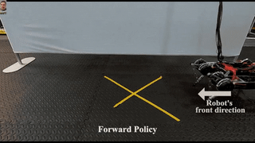

Frontier
Collected by Jianan, 2020. 本章节会实时收录全球科技动态。部分文字从原文直接引用，如有侵权，立即删除。本文仅供个人参考学习，不作商业用途。
0727 深度学习之父Hinton：下一代神经网络
7月27日，2018年图灵奖得主Geoffrey Hinton带来了主题为《The Next Generation of Neural Networks》的讲座。在讲座中，Hinton指出：人工神经网络最重要的未解难题之一，是如何像大脑一样有效地进行无监督学习。当前有两种主要的无监督学习方法：
第一种方法，以BERT和变分自编码器为例，使用了深度神经网络来重建其输入。这种方法对于图像来说是有问题的，因为网络的最深层需要对图像的精细细节进行编码。
第二种方法是Becker和Hinton在1992年提出的:当给定相同图像的两个不同片段作为输入时，训练深度神经网络的两个副本以产生具有高互信息的输出向量。设计此方法的目的是使表征形式不受输入无关细节的束缚。
Geoffrey Hinton现在是多伦多大学的计算机科学系荣誉退休教授，Google的副总裁兼工程研究员，以及Vector Institute的首席科学顾问。他最早使用反向传播学习单词嵌入，对神经网络研究的其他贡献包括玻尔兹曼机、分布式表示、时延神经网络、专家混合、变分学习和深度学习。2018年，Geoffrey Hinton因在深度学习方面的贡献与Yoshua Bengio、Yann LeCun一同被授予了图灵奖。
0726 通用强化学习用算法发现算法：DeepMind 数据驱动「价值函数」自我更新
击败卡斯帕罗夫的「深蓝」并不是真正的人工智能，它过度依赖了人类设计的规则，而最近DeepMind的一项深度强化学习新研究表明，不用人工介入，完全数据驱动，算法自己就能发现算法。
DeepMind最近引入了一种新的元学习方法，可以自动生成强化学习算法，称为学习策略梯度（LPG）。研究人员认为，该算法可以从数据中自动发现更新规则，而且能更好地适应特定环境，它既包括预测什么（价值函数），又包括如何从中学习，如何与环境交互。该元学习方法的目标是从环境和初始代理参数的分布中寻找最优的更新规则。
本文首次尝试了结合「预测内容」和「如何进行引导」来元学习完整的RL的更新规则，从而取代了一些现有的RL概念。但是至少证明了，强化学习从玩具环境迁移到具有挑战性的基准是可能的。DeepMind的这一研究，让我们朝着通用 RL 算法又迈进了一步。
0725 GPT-3发布
知识点： GPT = Generative Pre-training Transformer， 是一种自然语言处理算法。这种算法让两个神经网络通过竞争相互完善生成一个处理语言的模型。
GPT 是 Generative Pre-training Transformer 的简称，是由 Alec Radford 编写的语言模型，2018 年由埃隆 · 马斯克的人工智能研究实验室 OpenAI 发布。 它采用了生成式语言模型（两个神经网络通过竞争相互完善），通过对不同的书面材料集与长篇连载文本的预训练，能够获取世界知识并处理长程依赖关系。
GPT-2 于 2019 年 2 月宣布，是一个无监督的转化语言模型，它是在 800 万份文档上训练出来的，共 40GB 的文本，来自通过 Reddit 提交分享的文章。埃隆 · 马斯克并不愿意发布它，因为他担心它可能被用来向社交网络发送假新闻。
2020 年 5 月，OpenAI 发布了 GPT-3，这个模型包含的参数比 GPT-2 多了两个数量级（1750 亿 vs 15 亿个参数），它比 GPT-2 有了极大的改进。
给予任何文本提示，GPT-3 将返回一个文本完成，试图匹配用户给它的模式。用户可以给它 " 编程 "，只需向它展示几个希望它做的例子，它就会提供一篇完整的文章或故事，比如下面的文字，完全由 GPT-3 编写。
0308 谷歌打造通过AI学走路的四足机器人
谷歌，加州大学伯克利分校和佐治亚理工学院的研究人员联合发表了一篇论文，构建了一个通过AI自学走路的四足机器人，并将它取名为“RainbowDash”。
Rainbow Dash结合了深度学习和强化学习两种不同类型的AI技术。通过深度学习，系统可以处理和评估来自其身处环境的原始输入数据；通过强化学习，算法可以反复试验，以学习如何执行任务，并根据完成的程度来获得奖励和惩罚。也就是说，通过上述的这种方式，机器人便可以在其不了解环境中实现自动控制策略

0117 斯坦福打造鸽子机器人
斯坦福的研究人员制造了一种半生物鸽子机器人——PigeonBot, 并提出了一些新的研究成果，准确地了解了鸟类如何通过改变翅膀的形状来维持、控制飞行。
0105 强化学习基础
强化学习（RL）是现代人工智能领域中最热门的研究主题之一，其普及度还在不断增长。本文介绍了开始学习RL需要了解的核心要素